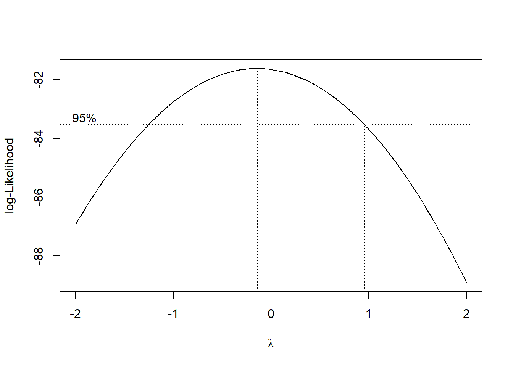

6.2 非常態資料的轉換
下面是常見的資料轉換方式：
- 開根號
- 取log
- 倒數+根號
- 倒數
- Box-Cox轉換：先求\(\lambda\)值，計算log-likeihood峰值的lambda值，根據\(\lambda\)對觀測值取一個函數。實際上，Box-Cox轉換就包含了平方根、log、倒數等函數。
利用{MASS}boxcox可以計算出\(\lambda\)值，但是後續取函數部分需要自行作業。因此我寫了一個函數nboxcox來完成常態性檢定與數據轉換，如果數據是常態，就不執行boxcox轉換；反之，則回傳轉換後數據。
# Box-Cox transform
nboxcox<-function(data , y){
require(tidyverse)
data_y<-unlist(as.vector(select_if(data[y],is.numeric)),use.names = F)
shapiro_out <- data_y %>% shapiro.test()
if (shapiro_out$p.value < 0.05) {
cat('\n The variable',paste0("'",y,"'"),'is not normality.\n')
require(MASS)
forMu <- formula( paste0(as.character(y),'~1'))
bc <- boxcox(forMu,data = data)
lambda<- bc$x[which.max(bc$y)]
if (lambda != 0){
newy <- ( data_y^(lambda) -1)/lambda
print(newy)
}else if(lambda == 0 ){
newy <- log(data_y)
print(newy)}}
else if(shapiro_out$p.value >= 0.05){
cat('The variable',paste0("'",y,"'"), 'is normality.\nReturning original data.\n')
return(data_y)}}
# 範例
nboxcox(iris,'Sepal.Length')##
## The variable 'Sepal.Length' is not normality.
## [1] 1.455175 1.423312 1.389928 1.372623 1.439425 1.500388 1.372623 1.439425
## [9] 1.336687 1.423312 1.500388 1.406819 1.406819 1.318013 1.556402 1.542821
## [17] 1.500388 1.455175 1.542821 1.455175 1.500388 1.455175 1.372623 1.455175
## [25] 1.406819 1.439425 1.439425 1.470576 1.470576 1.389928 1.406819 1.500388
## [33] 1.470576 1.514825 1.423312 1.439425 1.514825 1.423312 1.336687 1.455175
## [41] 1.439425 1.354883 1.336687 1.439425 1.455175 1.406819 1.455175 1.372623
## [49] 1.485642 1.439425 1.701131 1.632643 1.690193 1.514825 1.644555 1.542821
## [57] 1.620517 1.423312 1.656259 1.470576 1.439425 1.569717 1.582778 1.595593
## [65] 1.528966 1.667763 1.528966 1.556402 1.608170 1.528966 1.569717 1.595593
## [73] 1.620517 1.595593 1.632643 1.656259 1.679072 1.667763 1.582778 1.542821
## [81] 1.514825 1.514825 1.556402 1.582778 1.500388 1.582778 1.667763 1.620517
## [89] 1.528966 1.514825 1.514825 1.595593 1.556402 1.439425 1.528966 1.542821
## [97] 1.542821 1.608170 1.455175 1.542821 1.620517 1.556402 1.711893 1.620517
## [105] 1.644555 1.763224 1.423312 1.732906 1.667763 1.722482 1.644555 1.632643
## [113] 1.679072 1.542821 1.556402 1.632643 1.644555 1.773027 1.773027 1.582778
## [121] 1.690193 1.528966 1.773027 1.620517 1.667763 1.722482 1.608170 1.595593
## [129] 1.632643 1.722482 1.743167 1.792206 1.632643 1.620517 1.595593 1.773027
## [137] 1.620517 1.632643 1.582778 1.690193 1.667763 1.690193 1.556402 1.679072
## [145] 1.667763 1.667763 1.620517 1.644555 1.608170 1.569717